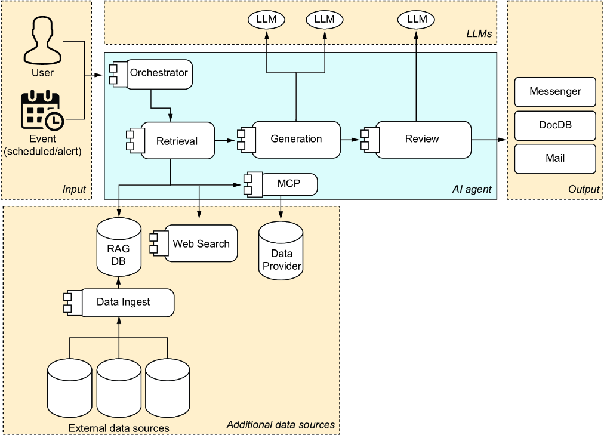
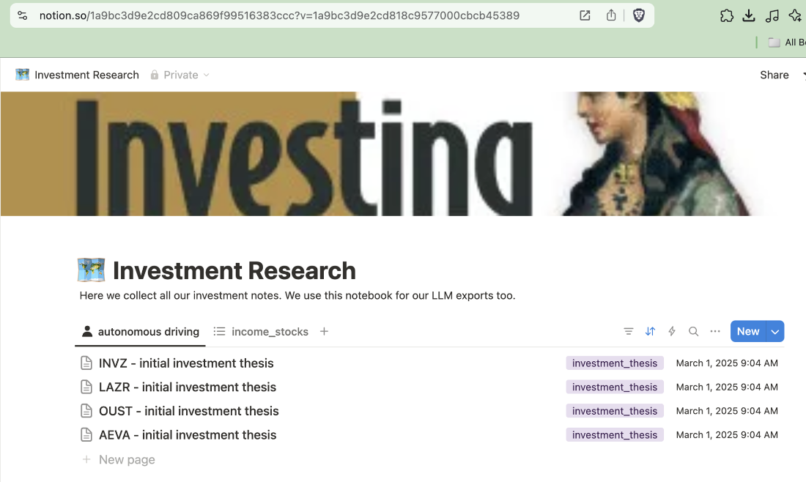
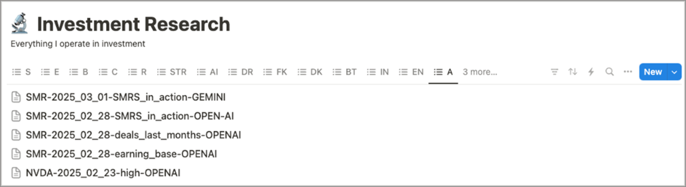
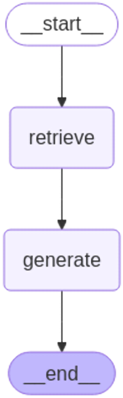

Chapter 8 concluded that large language models (LLMs) are powerful research assistants who can significantly streamline asset analysis. We learned the fundamentals, including the distinction between discriminative and generative AI (GenAI), as well as how to trigger LLM prompts effectively.
Chapter 9 focuses first on the advanced application of LLMs without frameworks to build AI agents. We’ll first show scenarios for integrating LLM into workflows. We’ll create a prompt repository and design a first workflow to bring more structure to AI-augmented research. Additionally, we’ll demonstrate how to export our findings to Notion, a modern note-taking application that helps organize and structure research efficiently.
In the second part of this chapter, we’ll integrate frameworks to build AI agents. We’ll show how to use them and how much work can be simplified. We’ll introduce what is possible in a no-code framework using the platform n8n. Lastly, we’ll focus on LangChain, which allows us to code logic in Python. Let’s get started.
In chapter 8, we used one-shot prompting to query LLMs. In simplified terms, this is submitting a single prompt to an LLM for a single response. Now, imagine that you get access to a human expert, and you’re allowed to ask only one question. This scenario is common; consider a press conference where a politician responds to the press’s inquiries. You might not get the desired answers if your question is poorly formulated. Compare a single-question, single-answer scenario to the next stage of communication. Imagine being able to interview that expert and engage in a dialogue. Based on past answers, you can ask more directed questions.
We can create parallels to AI. In addition to asking one-shot questions for basic scenarios, we can develop a refined strategy for more complex settings. Before we delve into the details, let’s consider what is required for successful communication in this analogy.
One difference between conversing with AI and human interaction is the reflection of past communication. If Rajesh and Peter discuss a complex topic and gain new insights from that discussion, both can use what they have learned in upcoming talks. At the current stage of development, LLMs don’t gain additional insights from interaction with users.
Note In the background, the developers of LLMs will undoubtedly analyze conversations between LLMs and users to use the insights gained in building new models. However, this isn’t the same as humans learning from single discussions.
One practical approach is to use Retrieval-Augmented Generation (RAG), which enhances LLMs by incorporating relevant external context into their input. In other words, we create additional memory for an LLM by adding specific information that it can use when crafting answers.
Imagine being locked in the Vatican Library with books that have been kept secret for centuries. These books may contain fascinating historical insights. You’re the first layperson to study them, but there’s one catch: they are all written in ancient languages that you don’t understand. We may need assistance accessing these sources, such as translation apps or expert scholars.
LLMs are trained on massive amounts of data. Data that was out of scope during training is inaccessible to an LLM in the same way that we would never learn to speak a language such as Latin. In both scenarios, the LLM and the human could learn new capabilities, but training new LLM models and learning Latin takes time. As we can use external help, the same thing applies to LLMs. One way to provide LLMs with access to information unavailable during training is to include this information during prompting.
We already mentioned that we can provide access to databases to address the challenge of integrating supplemental data and ensure that LLMs get access to other sources. In addition to the obvious candidate of a plain web search as an external data source, we can also incorporate APIs from various data providers, allowing an AI agent to retrieve mailbox content or chat history from messengers. We can task AI agents with parsing these sources, commonly by using API calls that include access tokens, and providing this information to LLMs.
Imagine gathering many brilliant minds in one room to solve a single complex problem. Sometimes, these high-octane brains speculate about great ideas without strategy or moderation, but fail to deliver a tangible solution. Every coordinated moderate team with a goal will likely outperform a rudderless team of geniuses.
When many creative individuals are involved, we often need a leader who can effectively channel their collective creativity and inspire them to work together. Jim Simons created one of the most successful investment funds. What people admire about him is that he was able to assemble a team of brilliant minds recruited from Ivy League universities. Everyone reading books about him will understand that coordinating the geniuses working with him often seemed more difficult than coming up with the math to harvest significant returns. However, once his sharp thinkers were aligned, the funds created by Renaissance Technologies outperformed the market.
Anyone with experience with academic structures will also understand that every scientific journal will downgrade papers without a peer review. Even the brightest scientists need feedback, and the challenge is often not coming up with an idea but working out the nitty-gritty details in a paper.
What works for humans is also valid for AI. We can employ multiple specialized LLMs and isolate them for specific tasks. One LLM generates an analysis, and the second performs a peer review. We can define all the logic so that AI works like an orchestra, where every LLM plays its part to achieve a unified result.
Using agentic design patterns is an approach to structuring AI research. DeepLearning.AI (https://mng.bz/V9Qx) introduced four patterns, which we’ll explore in detail:
The reflection pattern enables agents to iteratively improve their performance by analyzing past actions and adjusting their strategies based on the feedback received. This pattern encourages self-evaluation: after each task, the agent collects outcome data and measures performance against predefined goals or metrics. Through repeated feedback loops, the agent identifies inefficiencies, uncovers patterns, and refines its decision-making over time.
Consider a trading bot as an example. Throughout the trading day, it follows predefined strategies to execute trades. At market close, the bot aggregates key performance indicators—such as profitability, risk exposure, and execution accuracy—and evaluates which strategies underperformed or missed critical signals. Based on these insights, it revises its approach for the next trading session. It may tighten risk thresholds, deprioritize low-yield strategies, or fine-tune execution timing. This continuous cycle of action, evaluation, and adaptation lies at the heart of the reflection pattern.
The tool use pattern empowers agents by integrating external tools, libraries, or APIs to expand their functional range. Rather than relying solely on internal logic, agents can delegate specific tasks to specialized systems, such as data retrieval, transformation, or advanced computations.
This pattern mirrors how humans use calculators or web services to solve domain-specific problems efficiently. An AI agent may call a stock price API to retrieve real-time data or invoke a sentiment analysis tool to interpret market news. When needed, the agent autonomously identifies which tool to activate, orchestrates the calls, and integrates the results into its broader decision-making process.
By outsourcing complex subtasks to purpose-built tools, agents remain lightweight and modular, enabling them to tackle diverse challenges without reinventing the wheel. Let’s explore how to coordinate these subtasks.
The planning pattern enables agents to construct and execute multistep strategies to accomplish complex goals. It introduces dynamic adaptability by allowing agents to generate workflows in real time based on current objectives, available resources, and operational constraints.
In this approach, the agent begins by defining the end goal. It then evaluates the current environment, identifying constraints, dependencies, and tools. If a preferred resource is unavailable, the agent seeks alternatives. Based on this assessment, it constructs a sequence of actions that takes dependencies into account and executes the plan step-by-step, continuously monitoring outcomes.
Consider an AI-driven stock advisory system that evaluates hundreds of companies daily. To identify promising investments, it dynamically builds a research workflow that gathers financial data, scans news articles, processes sentiment data, and ranks opportunities. If a company’s profile changes due to a significant earnings surprise, the agent adapts its plan, reprioritizing the analysis and sending timely alerts.
The planning pattern emphasizes structure with flexibility, turning reactive agents into proactive strategists. Let’s see how multiple agents can coordinate work.
The multi-agent pattern coordinates multiple specialized agents to solve complex tasks collaboratively. This design emphasizes parallelism, specialization, and delegated reasoning, where each agent contributes a unique perspective or capability, thereby enhancing overall system performance. An orchestrator or moderator coordinates the overall process, ensuring that agents operate in sync and that their outputs are integrated effectively.
Imagine a stock buy decision modeled as a deliberative process, similar to a courtroom. One agent is the optimist, advocating for the purchase by analyzing growth potential, profitability, and momentum. A second agent acts as the skeptic, focusing on downside risks, macroeconomic headwinds, or signs of overvaluation. A third neutral agent acts as the adjudicator. It reviews the arguments from both sides, weighs their merit, and synthesizes a final investment recommendation. This pattern mirrors expert panels in human decision-making, promoting robustness through diverse perspectives and modular task handling.
To illustrate everything we learned so far in one reference case for AI agents, let’s create a reference case for investment analysis. Such a workflow is shown in figure 9.1.

In the first stage, a workflow needs to be triggered. Let’s consider some possibilities:
An orchestrator starts with a retrieval process. In figure 9.1 we show one workflow. Based on the query, the agent is, of course, not limited to one workflow alone. The first step is the retrieval of information. AI engineers train each LLM model version with data up to a specific moment in time. Once they release the model, they start working on new models, but likely won’t touch existing models anymore. RAG provides additional data to LLMs, bridging the gap between the model’s release and the prompt’s submission. For this use case, we defined three categories:
Once we have the data retrieved, we need to start with the generation of responses. We can consider using multiple LLMs to generate answers. Here, we have the following options:
The standard “RAG only approach” is to augment the sources and collect results with one LLM. However, with multiple LLMs, we can also employ an additional step to review all results generated by multiple LLMs in another stage with a separate LLM. Lastly, we need to output the results. We can store all results in a database, such as Notion, as we’ve shown in chapter 8, or any other channel we like to use.
We can map all stages to agentic design patterns and reflect on the results we generated. We use various tools to collect additional data for LLMs, plan our execution, and adjust workflows as needed, employing different LLMs.
Let’s show how we can facilitate agentic workflows without specialized frameworks. We use a data science notebook for ad hoc research. We aim to automate and approach our research in a more structured manner. Let’s focus on three things to make our work more reusable:
One goal is to keep everything as simple as possible. Each chapter features full-functioning code that is downloadable from the publisher’s website. You’ll also find the code snippets for calling LLMs outlined in chapter 8 of the notebook, which is referenced in chapter 9. Let’s get started.
By continually analyzing companies, we can develop reusable prompts that can be applied to multiple scenarios. For example, we can ask an LLM about Apple’s performance parameters. We can reuse that prompt for Alphabet or Amazon as well. In chapter 8, we learned how to optimize prompts. We can update and refine existing prompts, mapping them to various scenarios.
We can also store prompts in a database to reuse them. Let’s explore the simplest possible database structure:
As every fan of The Hitchhiker’s Guide to the Galaxy knows, asking the right question isn’t always trivial. The key is to build up a solid repository and refine it as needed. For example, this is an elementary prompt:
As an investor, I’m looking at the company {company}. Provide a Boston Consulting Group (BCG) Framework analysis. Tell me which quadrant the company is in.
The identifier company, enclosed in curly brackets, is a variable that needs to be defined so that we can fill in the variable content into the string using a Python f-string. Take your time to refine and extend this prompt as needed to add more context. We stick to a simple prompt for teaching purposes.
Each prompt can have multiple contexts. For example, the prompt above may be helpful if we’re looking for income or growth stocks. It’s a generic prompt that helps explore new companies. If we already know the company well, asking an LLM about the quadrant of the BCG framework for a company no longer adds value.
If we keep a vast number of prompts in a database, we can tag them with a context that allows us to find them more easily later. You might reuse prompts based on industries or sectors. In chapter 11, we’ll examine catalysts, which are events that can lead to a significant change in share prices. Some prompts might be reusable for specific catalysts, such as earnings calls. The more specific a prompt gets—and remember, the more specific we ask, the more particular answers we get—the fewer scenarios we can use these prompts in.
If we kept a separate table to store tags, we could create an n:m relation in the table. A tag can be associated with multiple prompts, and a prompt can have multiple tags.
If we now want to store prompts and tags in database tables, we can use create table statements, as shown in listing 9.1. We stripped these tables to the simplest form possible. This way, you can always fetch prompts from your local database to reuse them for different scenarios. Remember that you need a SQL console connected to a database to execute the Data Definition Language (DDL) statements. For exploratory purposes, SQLite is more than sufficient.
create table prompt
(
id TEXT primary key,
prompt TEXT not null
);
create table main.tag
(
tag_name TEXT not null,
prompt_id TEXT not null
);
We can use these tables in an interactive research scenario. We have our Jupyter Notebook open in our development environment. We might decide to investigate a specific stock, let’s say, Apple. Later, we investigate alternative stocks, such as Alphabet. If we have prompts in our database, we can always reload the text of the prompts to send them to the LLMs.
Having that, we can always fetch prompts and send them to an LLM—how we send prompts to an LLM we’ve shown in the chapter before—and we’ll get many answers. We need to store this information in a secure location. Let’s explore how we can do that.
Someone who has worked with various LLM chatbots may be familiar with this situation. You’re using multiple LLMs. At some point, all the prompts and answers are dispersed on many platforms. Various questions on different topics are often intermixed, making it challenging to find the past results you want to look up immediately.
One way to prevent that is to store the output in a central repository. In chapter 6, we used Google Sheets to monitor our portfolio. For our research, we use a structured note-taking app.
Notion is a professional note-taking app that enables you to create journals with multiple pages for notes on a single topic, such as investment research. You can filter these notes efficiently by tags and sort them by properties such as last edited time or creation date.
Figure 9.2 shows a Notion journal in which we made two portfolios. At the top, we have a unique ID in the URL. This URL contains an identifier: 1a9bc3d9e2cd809ca869f99516383ccc. Creating your notebook with the journal will assign a unique identifier to each page in Python, and you’ll see it in the URL the moment you share the notebook via the web.

Let’s learn how to export content to Notion. First, we need a title for the note. The screenshot displays reference entries, such as INVZ—Initial Investment Thesis. Notion needs a dictionary structure with a title to create a title page. The following method contains a basic template. We pass the title in string form as a method parameter. Then, we insert the title as a value for the property content below the property text. We also add it as a value for the property plain_text:
def get_title_property(title: str):
return {'Name': {'id': 'title',
'type': 'title',
'title': [{'type': 'text',
'text': {'content': title, 'link': None},
'annotations': {'bold': False,
'italic': False,
'strikethrough': False,
'underline': False,
'code': False,
'color': 'default'},
'plain_text': title,
'href': None}]}}
With the title property, we can create pages. As shown in the following code, we trigger a REST call and pass the title property as a parameter. We receive a return code and validate that the call has returned a status code of 200, indicating that everything was successful. The parameter DATABASE_ID is the unique ID that we collect through the URL, as described at the beginning of this section.
def create_page(title_properties: dict) -> str:
create_url = "https://api.notion.com/v1/pages"
payload = {"parent": {"database_id": DATABASE_ID},
"properties": title_properties}
res = requests.post(create_url, headers=headers, json=payload)
if res.status_code == 200:
print(f"{res.status_code}: Page created successfully")
else:
print(f"{res.status_code}: Error during page creation")
return res.json()["id"]
The result is a property ID. This ID refers to the newly created page. With that, we have a new page that we can identify, so we can write content on that page, as shown in the following code. Again, this is done via REST API, and we insert data through a JSON-compatible dictionary structure.
def write_to_page(page_block_id: str, data: dict) -> bool:
edit_url = f"https://api.notion.com/v1/blocks/{page_block_id}/children"
res = requests.patch(edit_url, headers=headers, json=data)
if res.status_code != 200:
print(f"{res.status_code}: Error during page editing")
return False
return True
When writing to Notion, it’s essential to note that we can only write up to 2,000 characters simultaneously. For this reason, we must first break down the text into parts to write a comprehensive answer. The following method shows this. If a write operation fails, we interrupt the whole process.
def write_chunked(page_block_id, text, chunk_size = 2000):
for i in range(0, len(text), chunk_size):
chunk = text[i:i+chunk_size]
if not write_to_page(page_block_id, create_block(chunk)):
break
The content is again encapsulated in a JSON-compatible dictionary structure covering formatting and other topics. In the preceding code, when we call the write_to_page method, we also call the create_block method to create this dictionary. We fill in the text into this template by setting a value for the property content:
def create_block(content : str) -> dict:
return {
"children": [
{
"object": "block",
"type": "paragraph",
"paragraph": {
"rich_text": [
{
"type": "text",
"text": {
"content": content,
},
}
]
},
},
]
}
Once this is written, we can embed all the code in a routine to ask a question. Listing 9.2 shows this code that would call LLMs and write the results to Notion. For the note’s title, we combine a stock ticker, the current date, the prompt ID, and the LLM used.
from datetime import datetime
def ask_question(stock_ticker: str, prompt_id: str,
prompt_text = None, llm = LLM.OPENAI) -> None:
date_str = datetime.now().strftime("%Y_%m_%d")
if stock_ticker:
properties = get_title_property(
f"{stock_ticker}-"
f"{date_str}-{prompt_id}-{llm}") #1
else:
properties = get_title_property(
f"generic-{date_str}-{question_id}-{llm}") #1
page_block_id = create_page(properties)
if prompt_text is None: #2
prompt_text = get_question_by_id(question_id)
if len(prompt_text) > 0:
write_chunked(page_block_id, prompt_text) #3
write_chunked(page_block_id,
get_answer(stock_ticker,
prompt_text,
llm)) #4
Figure 9.3 illustrates how a notebook might appear if we continue submitting prompts. The LLMs return answers, and we can perform fact-checking when we open the notes to review the answers provided by the LLMs.

Research is often interactive. With a data science notebook, you have your coding environment from which you send prompts to an LLM. Collecting information from our databases allows us to filter by tags and retrieve prompts by referencing their IDs. The methods in listing 9.3 outline this. You receive all the prompts, along with their IDs, related to a specified topic. In the reference case, the referenced ID is called earnings_call.
engine = create_engine('sqlite:///question.db')
all_questions = pd.read_sql('prompt', engine)
all_prompts = pd.read_sql('context', engine)
all_tags = pd.read_sql('tag', engine)
def get_prompt_by_id(id: str) -> str: #1
try:
return all_prompts[all_prompts["id"] == id]["prompt"].iloc[0]
except:
return "No prompt found with that ID"
def get_prompts_per_tag(tag: str): #2
all_prompt_tags = all_tags.loc[
all_tags['tag_name'] == tag,
'prompt_id'].tolist()
return all_prompts[all_prompts['id'].isin(all_prompt_tags)]
all_prompts_per_category = get_prompts_per_category("earnings_call")
all_prompts_per_category
Then, by calling get_prompt_by_id("earnings_call"), you retrieve the prompt text for the prompt_ID "earnings_call", which could be a prompt such as: “An earnings call of the company is ahead. What should I check to decide whether to sell my position or buy more?” Reading from the all_prompts_per_category may not be enough, as the prompt texts may be truncated if you display them on the screen.
With that, all you need to do is call the ask_question method with the correct parameters, such as stock ticker and prompt ID, and you fill up your notion pages with content. Based on the results, you can seek further details or begin fact-checking.
Instead of a user communicating directly with the LLM, many frameworks provide abstraction and add functionality to facilitate the interaction, such as prompt enhancements and retrieval of augmented generation. If a user authorizes the AI agent, they can access specific resources, such as personal data.
We can examine the features of AI agents, as illustrated in figure 9.1 at the beginning of this chapter. Developers are familiar with the distinctions between no-code and code approaches in various fields of computer science. Data integration is a good example. Some teams integrate data sources by writing code to interact with frameworks such as Apache Kafka. They push data into Kafka topics, which are then distributed to all consumers who have subscribed to that topic. In contrast, other frameworks, such as Apache NiFi, offer a user interface (UI). Users click on a data source, drag it to a destination, and configure details.
Companies often value tools that reduce complexity because they lack sufficient qualified team members with programming skills. However, critics claim that click-and-point tools are also just an abstraction of logic. Frequently, these “no-code tools” miss core functionalities. Perhaps some teams can quickly click themselves into a first demo, but then, when engineers need to put them into production, integrating noncustom functionality takes more time, as if programmers had implemented the solution themselves.
Using AI agents, developers encounter a similar strategic decision. Some frameworks allow engineers to create agents via a UI. One of these frameworks is called n8n. To build a workflow with n8n, you need to register for a user account on the platform, which gives you access to the workflow UI. Users can create workflows on a canvas, connecting them to an input, such as a messenger or a chat window. They can incorporate various services into the workflow, such as transcribing voice to text or invoking LLMs with prompts based on the input. Click-and-drag tools are often easier to grasp by watching videos than by reading books. Numerous interactive tutorials are available that guide you step-by-step in creating your workflow. Let’s concentrate on how to build AI agents using programming logic, which is often easier to comprehend in a book.
Many videos explain what to click and how to collect the results of the past steps to process further. As this book is titled Investing for Programmers, we aim to focus on creating workflows in general using development tools. LangChain is a framework for developing applications that use LLMs. It simplifies the stages of the LLM application life cycle. LangChain incorporates a broad and growing list of providers (https://mng.bz/xZx6).
A provider connects data sources and LLMs. Listing 9.4 shows an example that executes a one-shot prompt using a LangChain module that wraps code around the access to OpenAI’s LLMs.
from langchain_openai import ChatOpenAI
OPENAI_KEY = os.getenv("ai.openai.pwd")
llm = ChatOpenAI(
model="gpt-4o",
temperature=0,
max_tokens=None,
timeout=None,
max_retries=2,
api_key=OPENAI_KEY)
messages = [
(
"system",
investment_persona,
),
("human", "Provide a SWOT analysis of Google."),
]
ai_msg = llm.invoke(messages) #1
ai_msg
We implemented the same functionality in chapter 8 using OpenAI’s native libraries. We can now explore the integration of other LLMs, such as Anthropic (https://mng.bz/AGXQ), and observe that the code structure is similar.
Note In chapter 8, we explained how to create an investment persona. Whenever you use LLMs to analyze investment opportunities, use the opportunity to provide LLMs as much information as possible about yourself.
Python is a language built on convention. If we have collections, the principle is that regardless of the data structure used in the collection, the len() method will always return the number of items in the collection. Now, we also have a unification with LangChain. We can assume that, for instance, no matter which LLM we use, the method invoke() will always send a prompt to the LLM. This also makes it easier to add new LLMs, as with native providers, we would have to learn the specific details. This is a good start, but it’s not yet LangChain’s primary value proposition.
Let’s explore the snippet in listing 9.5. In this code, we integrate Yahoo Finance News into our conversation.
from langchain.agents import AgentType, initialize_agent
from langchain_community.tools.yahoo_finance_news import YahooFinanceNewsTool
tools = [YahooFinanceNewsTool()]
agent_chain = initialize_agent(
tools,
llm, # see listing 9.4
agent=AgentType.ZERO_SHOT_REACT_DESCRIPTION,
verbose=True,
)
agent_chain.invoke(
"What happened today with Microsoft stocks?", #1
)
This code snippet underlines a substantial difference from plain LLM calls. We use agents that connect data sources to an LLM. In the code example, we set the verboseness to True. Let’s look at the output of the agent. Following is the transcript of the previous listing 9.5, executed in April 2025:
Entering new AgentExecutor chain . . .
I should check the latest financial news for Microsoft to see what happened today.
Action: yahoo_finance_news
Action Input: MSFT
Observation: Is Microsoft (MSFT) the Best Machine Learning Stock to Buy Now?
We recently published a list of the 10 Best Machine Learning Stocks to Buy Now. In this article, we’re going to take a look at where Microsoft Corporation (NASDAQ:MSFT) stands against other machine-learning stocks. Grand View Research reported that the global machine-learning market was valued at $36.73 billion in 2022. It’s now expected to [ . . .]
Microsoft Corporation (MSFT): Still Among “Cleanest” AI Plays
We recently published a list of 10 AI Stocks to Watch Amid Market Volatility. In this article, we’re going to take a look at where Microsoft Corporation (NASDAQ:MSFT) stands against other AI stocks to watch amid market volatility. The uncertain macroeconomic environment is diminishing investors’ readiness to pay high prices for stocks related to [. . .]
Thought: Based on the news articles, it seems like Microsoft is still a strong player in the machine learning and AI markets.
Final Answer: Microsoft stocks are still performing well in the machine learning and AI sectors.
Finished chain.
As shown in the output, we’ve instructed LangChain to create an AI agent that explores Yahoo Finance for news and integrates the collected information into research for a given prompt. We can chain more tools together when running our research. LangChain also enables us to incorporate providers into our research using AI agents. We can implement code to access custom data and create custom data providers for AI agents. This makes LangChain a robust framework that can aid in research.
We can enhance LLM generation performance by providing additional data that is inaccessible to LLMs during training. Recent data (e.g., data created after LLM training) or data unavailable due to restricted access (e.g., internal corporate data) are good candidates for retrieval-augmented generation (RAG).
The previous example illustrated how to integrate recent data using Yahoo Finance. Pulling information from news resources helps balance missing data after model training. However, countless data sources can be integrated, at least in theory. In chapter 11, we outline some of them, and they are so huge that you don’t want to poll them from public web sources during prompting. We need to find a structured way to provide access to additional data, including storing this extra data in databases.
In the following example, we’ll add the earnings call transcripts of selected companies to the prompting. If an LLM had been trained some months ago, it wouldn’t have had access to data from a recent event in which the executives of a public company informed investors about the latest results. How do we get the earnings call data? Various financial analysis platforms provide transcripts from earnings calls, but the question is whether it’s possible to scrape them.
When you have a vast amount of data, you want to store it in containers that allow you to keep this data safe and accessible. We separate work to achieve this goal. One process fetches data from various sources and loads it into a database. Prompt submissions are part of a different approach, in which the LLM uses this database as an extended brain. Let’s get our hands dirty.
We need to fetch data from different sources. We can scrape pages from various financial analysis platforms using a web crawler, fetch information from downloaded documents, or load data via API or databases. Some of this data is also available through public data exchange. As a reference example, you can load company filings from Electronic Data Gathering, Analysis, and Retrieval system (EDGAR) offered by a data marketplace from Amazon Web Services (AWS; https://mng.bz/Z9a9).
Use cases for professional hedge funds and investment firms, which load data from various sources (e.g., many commercial providers) into their data platforms, are outside the scope of this book. Scraping data from multiple platforms poses a risk for a book, as many platforms change their internal structures, and code samples that load data from external web pages may no longer function properly. If you’re interested in scraping data, you can explore frameworks such as Beautiful Soup and other libraries that load data from various sources.
Instead, we provide transcripts from earnings calls of companies in the automotive sector as text files for download. Feel free to add data if you want to experiment with the code.
In listing 9.6, we show how to load these text files into memory. While the logic for loading files should be familiar to most programmers, be aware that we add the loaded text to a LangChain-specific data structure to store additional documents for prompt submission.
from langchain_core.documents.base import Document
all_docs = []
files = ["pony.txt", "oust.txt", "lazr.txt", "invz.txt", "aeva.txt"]
for f in files:
file = open(f, "r")
content = file.read()
doc = Document(content) #1
all_docs.append(doc)
file.close()
Let’s provide additional context. In this reference example, we want to explore autonomous driving companies. We can run two different contexts to validate the functionality. In one context, we state that we believe in Light Detection and Ranging (LiDAR) systems; in the other, we state that we prefer companies that don’t focus on LiDAR. We’ll submit both contexts separately later to validate that the answers differ. We expect different recommendations based on our configuration, such as whether we prefer LiDAR technologies.
Listing 9.7 outlines how to define and add these preferences to the catalog. Note that we need to recreate the data structures to rerun the example with a different context.
generic = """I have a computer science background. I have worked on various digital transformation projects for multiple companies. I understand well how AI can change companies' businesses. I am looking for stocks of companies that might get transformed through AI but have not yet been overrun by investors.""" pro_lidar_text = """I believe in the future of autonomous driving. Autonomous driving needs a LiDAR system. Do not recommend any companies that reject LiDAR.""" con_lidar_context = """Please prefer companies that focus on solutions without LiDAR systems as they are expensive.""" all_docs.append(Document(generic + pro_lidar_text))
After executing this script, all the documents have been collected. Let’s transform the data to be submitted to an LLM. Because we have a large amount of text in memory, we need to convert it into a format that an LLM can understand.
We have data in memory, and to use all the content in RAGs, we need to add it to a vector database. A vector database is a storage container that enables the storage of vector embeddings. All the variable content in our memory must now be mapped as vectors. This helps us orchestrate workflows in which, during a prompt submission, this additional information is evaluated and processed accordingly. We accumulate vast amounts of information in more advanced scenarios and store it in dedicated databases, such as PostgreSQL or MongoDB. We use an in-memory database for this reference example to focus on the use case and not get distracted by data platform management. In listing 9.8, we split the data from the documents into subdocuments.
from langchain_text_splitters import RecursiveCharacterTextSplitter
text_splitter = RecursiveCharacterTextSplitter(
chunk_size=1000,
chunk_overlap=200,
add_start_index=True,
)
all_splits = text_splitter.split_documents(all_docs)
print(f"Split blog post into {len(all_splits)} sub-documents.")
Once we’ve split the documents into enough chunks, we need to convert them into embeddings. Each LLM has its standard. Listing 9.9 shows how to add all the chunks into an in-memory vector database using OpenAI embeddings.
from langchain_openai import OpenAIEmbeddings embeddings = OpenAIEmbeddings(model="text-embedding-3-large") from langchain_core.vectorstores import InMemoryVectorStore vector_store = InMemoryVectorStore(embeddings) document_ids = vector_store.add_documents(documents=all_splits)
Now that everything is ready and prepared, we need to move to the final stages: submitting prompts and evaluating results. We expect to see different results depending on whether we state that we believe in LiDAR or not, and we also expect some of the content from the RAG to be reflected in the response.
In a RAG, we’ll build execution graphs. These involve data structures to help orchestrate workflows. Programmers who have worked with Apache Spark or Apache Airflow are familiar with the directed acyclic graph (DAG) concept. We create a class called Stage that contains variables for the question, context, and response.
We also have methods for two stages. In one stage, we retrieve data from the vector database. Of course, what content we need from the data that we currently hold in memory depends on the question we send as a parameter. Lastly, we need to submit the prompt. Listing 9.10 shows this logic. The methods retrieve and generate represent two separate steps in processing the prompt.
from langchain_core.documents import Document
from typing_extensions import List, TypedDict
from langchain import hub
prompt = hub.pull("rlm/rag-prompt")
class State(TypedDict):
question: str
context: List[Document]
answer: str
def retrieve(state: State):
retrieved_docs = vector_store.similarity_search(state["question"])
return {"context": retrieved_docs}
def generate(state: State):
docs_content = "\n\n".join(doc.page_content for doc in state["context"])
messages = prompt.invoke({"question": state["question"], "context": docs_content})
response = llm.invoke(messages)
return {"answer": response.content}
In the next step, we define a question and initialize the LLM. In this example, we use the GPT-4.1 model from OpenAI:
from langchain.chat_models import init_chat_model
llm = init_chat_model("gpt-4.1", model_provider="openai")
question = "Recommend companies in the autonomous driving sector with good"
" recent earnings."
Our inquiry is about autonomous driving. We kept the prompt small to focus on clarity. Normally, you would often provide a longer prompt with more context and detail, as shown in chapter 8.
Listing 9.11 is our last step before execution. This snippet outlines how the orchestration works. We add both steps to a state machine and define the retrieve step as the starting point. The other sequence, generating first and retrieving additional content later, wouldn’t make sense. Keep in mind that execution workflows can become more complex with time. In the last line, we call the method to display the execution graph.
from langgraph.graph import START, StateGraph
from IPython.display import Image, display
graph_builder = (StateGraph(State).add_sequence
([retrieve, generate])) #1
graph_builder.add_edge(START, "retrieve") #1
graph = graph_builder.compile()
display(Image(graph.get_graph().draw_mermaid_png())) #2
Figure 9.4 outlines the execution graph where we first retrieve and then generate. The execution can become more complicated in more complex scenarios, but two stages are sufficient for this case.

Lastly, invoke the whole graph in which you submit the prompt with the question. This invocation will also include retrieving information from the vector database:
result = graph.invoke({"question": question})
print(f'Answer: {result["answer"]}')
The author received the following response when presented with a positive context about LiDAR:
Answer: Based on recent strong earnings and leadership in LiDAR technology for autonomous driving, Innoviz is recommended. Innoviz has secured partnerships with key players like Mobileye and integration with NVIDIA’s platform, while expanding production to meet rising demand. Additionally, Chinese robotaxi companies using LiDAR technology—with regulatory approvals and commercial fleet operations—are well-positioned, though specific company names aren’t given in the provided context.
We get a recommendation for Innoviz. If we review the earnings call transcript, we’ll also find a reference to this partnership with Mobileye.
Now, we examine the opposite scenario, in which we claim we don’t prefer LiDAR. The last Mobileye earnings call wasn’t included in the supplied documents; however, we can find information on the internet indicating that Mobileye has halted its efforts on LiDAR:
Based on the context, Mobileye is a notable company in autonomous driving with strong recent partnerships, OEM programs, and good earnings momentum, focusing on AI-powered solutions that don’t rely heavily on expensive LiDAR. The context also notes significant regulatory progress and commercial operation scale among companies with robotaxi services, suggesting strong business fundamentals for leading players in this space. Considering your preference to avoid LiDAR-centric approaches and the need for companies not currently overrun by investors, Mobileye stands out as a promising candidate.
We can now run agents with many different data sources. This should be done for now, and we can investigate charts and perform technical analysis. Many details in this chapter are based on earlier chapters in which we advocated investing in what we know. In the same way, to receive good answers, we need to know what to ask, which leads to the question of what additional context we need to provide. The final part is submitting the question as a prompt and evaluating the answer.